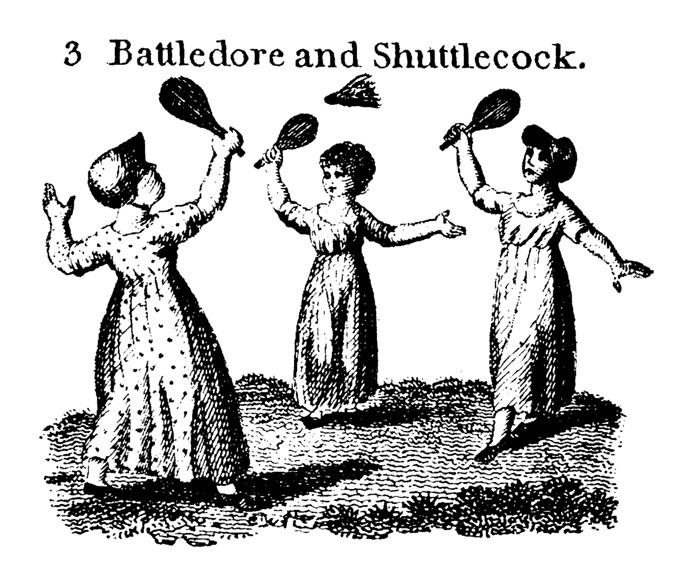
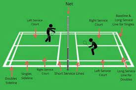
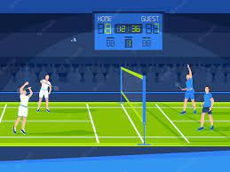
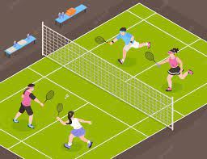

Badmintion
Badminton is a racquet sport played using racquets to hit a shuttlecock across a net. Although it may be played with larger teams, the most common forms of the game are "singles" (with one player per side) and "doubles" (with two players per side).
Badminton is often played as a casual outdoor activity in a yard or on a beach; formal games are played on a rectangular indoor court. Points are scored by striking the shuttlecock with the racquet and landing it within the opposing side's half of the court.
Each side may only strike the shuttlecock once before it passes over the net. Play ends once the shuttlecock has struck the floor or if a fault has been called by the umpire, service judge, or (in their absence) the opposing side.
The shuttlecock is a feathered or (in informal matches) plastic projectile which flies differently from the balls used in many other sports. In particular, the feathers create much higher drag, causing the shuttlecock to decelerate more rapidly.
Shuttlecocks also have a high top speed compared to the balls in other racquet sports. The flight of the shuttlecock gives the sport its distinctive nature.
The game developed in British India from the earlier game of battledore and shuttlecock. European play came to be dominated by Denmark but the game has become very popular in Asia, with recent competitions dominated by China.
In 1992, badminton debuted as a Summer Olympic sport with four events: men's singles, women's singles, men's doubles, and women's doubles;mixed doubles was added four years later.
At high levels of play, the sport demands excellent fitness: players require aerobic stamina, agility, strength, speed, and precision. It is also a technical sport, requiring good motor coordination and the development of sophisticated racquet movements.
Games employing shuttlecocks have been played for centuries across Eurasia, but the modern game of badminton developed in the mid-19th century among the expatriate officers of British India as a variant of the earlier game of battledore and shuttlecock.
("Battledore" was an older term for "racquet").

Its exact origin remains obscure. The name derives from the Duke of Beaufort's Badminton House in Gloucestershire, but why or when remains unclear. As early as 1860, a London toy dealer named Isaac Spratt published a booklet entitled Badminton Battledore A New Game, but no copy is known to have survived.
An 1863 article in The Cornhill Magazine describes badminton as "battledore and shuttlecock played with sides, across a string suspended some five feet from the ground".
The game originally developed in India among the British expatriates, where it was very popular by the 1870s.Ball badminton, a form of the game played with a wool ball instead of a shuttlecock, was being played in Thanjavur as early as the 1850s and was at first played interchangeably with badminton by the British, the woollen ball being preferred in windy or wet weather.
Early on, the game was also known as Poona or Poonah after the garrison town of Poona, where it was particularly popular and where the first rules for the game were drawn up in 1873.
By 1875, officers returning home had started a badminton club in Folkestone. Initially, the sport was played with sides ranging from 1 to 4 players, but it was quickly established that games between two or four competitors worked the best.
The shuttlecocks were coated with India rubber and, in outdoor play, sometimes weighted with lead. Although the depth of the net was of no consequence, it was preferred that it should reach the ground.
The sport was played under the Pune rules until 1887, when J. H. E. Hart of the Bath Badminton Club drew up revised regulations. In 1890, Hart and Bagnel Wild again revised the rules. The Badminton Association of England (BAE) published these rules in 1893 and officially launched the sport at a house called "Dunbar" in Portsmouth on 13 September.
The BAE started the first badminton competition, the All England Open Badminton Championships for gentlemen's doubles, ladies' doubles, and mixed doubles, in 1899.
Singles competitions were added in 1900 and an England-Ireland championship match appeared in 1904.
England, Scotland, Wales, Canada, Denmark, France, Ireland, the Netherlands, and New Zealand were the founding members of the International Badminton Federation in 1934, now known as the Badminton World Federation.
India joined as an affiliate in 1936. The BWF now governs international badminton. Although initiated in England, competitive men's badminton has traditionally been dominated in Europe by Denmark. Worldwide, Asian nations have become dominant in international competition.
China, Denmark, Indonesia, Malaysia, India, South Korea, Taiwan (playing as 'Chinese Taipei') and Japan are the nations which have consistently produced world-class players in the past few decades, with China being the greatest force in men's and women's competition recently.
The game has also become a popular backyard sport in the United States.
To win in badminton, players need to employ a wide variety of strokes in the right situations. These range from powerful jumping smashes to delicate tumbling net returns. Often rallies finish with a smash, but setting up the smash requires subtler strokes.
For example, a net shot can force the opponent to lift the shuttlecock, which gives an opportunity to smash.
If the net shot is tight and tumbling, then the opponent's lift will not reach the back of the court, which makes the subsequent smash much harder to return.
Deception is also important. Expert players prepare for many different strokes that look identical and use slicing to deceive their opponents about the speed or direction of the stroke.
If an opponent tries to anticipate the stroke, they may move in the wrong direction and may be unable to change their body momentum in time to reach the shuttlecock.
Since one person needs to cover the entire court, singles tactics are based on forcing the opponent to move as much as possible; this means that singles strokes are normally directed to the corners of the court.
Players exploit the length of the court by combining lifts and clears with drop shots and net shots. Smashing tends to be less prominent in singles than in doubles because the smasher has no partner to follow up their effort and is thus vulnerable to a skillfully placed return.
Moreover, frequent smashing can be exhausting in singles where the conservation of a player's energy is at a premium. However, players with strong smashes will sometimes use the shot to create openings, and players commonly smash weak returns to try to end rallies.

In singles, players will often start the rally with a forehand high serve or with a flick serve. Low serves are also used frequently, either forehand or backhand. Drive serves are rare.
At high levels of play, singles demand extraordinary fitness. Singles is a game of patient positional manoeuvring, unlike the all-out aggression of doubles.
Both pairs will try to gain and maintain the attack, smashing downwards when the opportunity arises.
Whenever possible, a pair will adopt an ideal attacking formation with one player hitting down from the rear court, and their partner in the midcourt intercepting all smash returns except the lift.
If the rear court attacker plays a drop shot, their partner will move into the forecourt to threaten the net reply. If a pair cannot hit downwards, they will use flat strokes in an attempt to gain the attack.
If a pair is forced to lift or clear the shuttlecock, then they must defend: they will adopt a side-by-side position in the rear midcourt, to cover the full width of their court against the opponents' smashes.
In doubles, players generally smash to the middle ground between two players in order to take advantage of confusion and clashes.

At high levels of play, the backhand serve has become popular to the extent that forehand serves have become fairly rare at a high level of play.
The straight low serve is used most frequently, in an attempt to prevent the opponents gaining the attack immediately. Flick serves are used to prevent the opponent from anticipating the low serve and attacking it decisively.
At high levels of play, doubles rallies are extremely fast. Men's doubles are the most aggressive form of badminton, with a high proportion of powerful jump smashes and very quick reflex exchanges.
Because of this, spectator interest is sometimes greater for men's doubles than for singles.
In mixed doubles, both pairs typically try to maintain an attacking formation with the woman at the front and the man at the back. This is because the male players are usually substantially stronger, and can, therefore, produce smashes that are more powerful.
As a result, mixed doubles require greater tactical awareness and subtler positional play. Clever opponents will try to reverse the ideal position, by forcing the woman towards the back or the man towards the front.
In order to protect against this danger, mixed players must be careful and systematic in their shot selection.

At high levels of play, the formations will generally be more flexible: the top women players are capable of playing powerfully from the back-court, and will happily do so if required.
When the opportunity arises, however, the pair will switch back to the standard mixed attacking position, with the woman in front and men in the back.